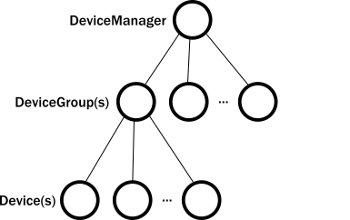

akka是什么? akka是一个基于actor并发模型的框架，该模型可以追溯到1973年发表的论文《A Universal Modular Actor Formalism for Artificial Intelligence 》， Actor就源于该模型。
actor通过消息传递的方式与外界通信。消息传递是异步的。每个actor都有一个邮箱，该邮箱接收并缓存其他actor发过来的消息，actor一次只能同步处理一个消息，处理消息过程中，除了可以接收消息，不能做任何其他操作。
Akka的哲学是基于End to End Argument这个事实的，即：在分布式环境中，reliable的通信需要在application层来确保，中间件层或者infrastructure只能提供效率上的帮助，而绝对无法保证reliability。
akka是一个基于actor模型的框架，提供了极致的异步并发处理性能，但是分布式条件下的可靠性需要使用者来保障
akka模块
以下列出了akka核心模块，所有akka的核心功能模块均遵循开源软件协议(Open Source Software (OSS)), Lightbend同时也提供商业版本，提供基于akka的增强功能。
- akka library
- How to build and design high-performance, concurrent applications.
- How to handle errors in a multi-threaded environment.
- How to protect my project from the pitfalls of concurrency.
- remoting
- How to address actor systems living on remote hosts.
- How to address individual actors on remote actor systems.
- How to turn messages to bytes on the wire.
- How to manage low-level, network connections (and reconnections) between hosts, detect crashed actor systems and hosts, all transparently.
- How to multiplex communications from an unrelated set of actors on the same network connection, all transparently.
- Cluster
- How to maintain a set of actor systems (a cluster) that can communicate with each other and consider each other as part of the cluster.
- How to introduce a new system safely to the set of already existing members.
- How to reliably detect systems that are temporarily unreachable.
- How to remove failed hosts/systems (or scale down the system) so that all remaining members agree on the remaining subset of the cluster.
- How to distribute computations among the current set of members.
- How to designate members of the cluster to a certain role, in other words, to provide certain services and not others.
- Cluster Sharding
- How to model and scale out a large set of stateful entities on a set of systems.
- How to ensure that entities in the cluster are distributed properly so that load is properly balanced across the machines.
- How to ensure migrating entities from a crashed system without losing the state.
- How to ensure that an entity does not exist on multiple systems at the same time and hence keeps consistent.
- Cluster Singleton
- How to ensure that only one instance of a service is running in the whole cluster.
- How to ensure that the service is up even if the system hosting it currently crashes or shuts down during the process of scaling down.
- How to reach this instance from any member of the cluster assuming that it can migrate to other systems over time.
- Persistence
- How to restore the state of an entity/actor when system restarts or crashes.
- How to implement a CQRS system.
- How to ensure reliable delivery of messages in face of network errors and system crashes.
- How to introspect domain events that have led an entity to its current state.
- How to leverage Event Sourcing in your application to support long-running processes while the project continues to evolve.
- projections
- Constructing alternate or aggregate views over an event stream.
- Propagating an event stream onto another downstream medium such as a Kafka topic.
- A simple way of building read-side projections in the context of Event Sourcing and CQRS system
- Distributed Data
- How to accept writes even in the face of cluster partitions.
- How to share data while at the same time ensuring low-latency local read and write access.
- Streams
- How to handle streams of events or large datasets with high performance, exploiting concurrency and keeping resource usage tight.
- How to assemble reusable pieces of event/data processing into flexible pipelines.
- How to connect asynchronous services in a flexible way to each other with high performance.
- How to provide or consume Reactive Streams compliant interfaces to interface with a third party library.
- Alpakka Alpakka is a separate module from Akka
- Connecting various infrastructure or persistence components to Stream based flows.
- Connecting to legacy systems in a manner that adheres to a Reactive Streams API.
- HTTP Akka HTTP is a separate module from Akka.
- How to expose services of a system or cluster to the external world via an HTTP API in a performant way.
- How to stream large datasets in and out of a system using HTTP.
- How to stream live events in and out of a system using HTTP.
- gRPC Akka gRPC is a separate module from Akka.
- Exposing services with all the benefits of gRPC & protobuf:
- Schema-first contract
- Schema evolution support
- Efficient binary protocol
- First-class streaming support
- Wide interoperability
- Use of HTTP/2 connection multiplexing
如果需要使用akka内部的module，需要添加如下依赖 1
2
3
4
5
6
7
8
9
10
11
12
13
14
15
16
17
18
19val AkkaVersion = "2.5.21"
libraryDependencies += "com.typesafe.akka" %% "akka-actor-typed" % AkkaVersion
libraryDependencies += "com.typesafe.akka" %% "akka-remote" % AkkaVersion
libraryDependencies += "com.typesafe.akka" %% "akka-cluster-typed" % AkkaVersion
libraryDependencies += "com.typesafe.akka" %% "akka-cluster-sharding-typed" % AkkaVersion
libraryDependencies += "com.typesafe.akka" %% "akka-cluster-singleton" % AkkaVersion
libraryDependencies += "com.typesafe.akka" %% "akka-persistence-typed" % AkkaVersion
libraryDependencies += "com.typesafe.akka" %% "akka-projection-core" % AkkaVersion
libraryDependencies += "com.typesafe.akka" %% "akka-cluster-typed" % AkkaVersion
libraryDependencies += "com.typesafe.akka" %% "akka-stream-typed" % AkkaVersion
actor层次结构

- / 称作root guardian，是系统内所有actor的parent, 当一个系统被关闭时，它也是最后一个被停止的actor
- /system 称作system guardian. Akka 或者其它的内置libraries可能会在此创建actor在system的命名空间下
- /user 称作user guardian. 应用内创建的actor都会在它下面
无论何时terminate actor, 它的子actor会首先递归停止. 停止一个子actor可以通过在其parent actor调用 context.stop(childRef),
1 | object StartStopActor1 { |
输出结果如下 1
2
3
4first started
second started
second stopped
first stopped
异常处理
和传统的防御性编程不同，Akka沿袭了Erlang的let it crash哲学，当actor内部发生异常时，并不试图捕捉异常并处理，而是重建一个新的actor, 使得整个系统在错误发生的时候可以自动恢复。
监护策略 在Akka中，在子actor被创建后，父actor可以成为子actor的监护者，在子actor出错时负责处理， 有一对一和一对多两种策略：
- OneForOneStrategy 只诛首恶，余者不问。只有出错的actor会被处理。Akka默认采用这种机制。
- OneForAllStrategy 城门失火，殃及池鱼。当出错时，不仅出错的actor,其兄弟actor也采用同样的策略一并处理。
恢复策略 actor出错时具体采用何种策略呢？共有四种：
- Stop - 停止出错的actor,不再让它处理任何消息。
- Restart - 这是默认策略，杀死旧的actor,重新创建一个新的actor。
- Resume - 忽略本次错误，恢复actor对消息的处理。
- Escalate - 交给父actor来决定处理策略。
1 | object SupervisingActor { |
会看到以下输出: 1
2
3
4
5
6
7supervised actor started
supervised actor fails now
supervised actor will be restarted
supervised actor started
[ERROR] [06/30/2021 12:01:41.800] [testSystem-akka.actor.default-dispatcher-3] [akka://testSystem/user/supervising-actor/supervised-actor] Supervisor RestartSupervisor saw failure: I failed!
java.lang.Exception: I failed!
在发生failure之后，被监控的actor停止然后立刻restarted(这就是为什么会打印出supervised actor will be restarted 但是没有supervised actor stopped)
一个IoT例子

官方文档提供了一个IoT例子，在这个IoT系统中分别有三个角色DevcieActor, DeviceGroup, DeviceManager以及一哥查询功能queryActor
DeviceActor这个角色有两个任务，记录温度，读取温度。
DevcieGroup 需要保存记录在Group下的device信息(使用一个内部Map对象实现)，主要任务有两个，当创建一个新的deviceActor时监控它，当收到actordevice stop消息需要从Map中移除。这个功能我们用以下代码实现 1
2
3
context.watchWith(deviceActor, DeviceTerminated(deviceActor, groupId, deviceId))
//Registers this actor as a Monitor for the provided ActorRef. This actor will receive the specified message when watched actor is terminated.
DeviceManager和DeviceGroup任务类似，同样要按需注册groupActor以及当groupActor停止时移除
在一个非query场景下，我们考虑的状态信息时很少的，官网中是这样说的:
- Device actors return a reading, which requires no state change
- Record a temperature, which updates a single field
- Device Group actors maintain group membership by adding or removing entries from a map
然而，假设我们需要查询一个group下的所有temperature，可能会发生这些意外
- A device actor might stop and not be able to respond back with a temperature reading.
- A new device actor might start up and not be included in the query because we weren’t aware of it.
- some actors might take a long time to answer
这些情形确实客观存在，最重要的是行为状态确定化，官网给出的solution如下
- When a query arrives, the group actor takes a snapshot of the existing device actors and will only ask those actors for the temperature.
- Actors that start up after the query arrives are ignored.
- If an actor in the snapshot stops during the query without answering, we will report the fact that it stopped to the sender of the query message.
- All actors in the snapshot have either responded or have confirmed being stopped.
- We reach a pre-defined deadline.
综合以上场景，我们将定义4种devcie状态来应对query
- It has a temperature available: Temperature.
- It has responded, but has no temperature available yet: TemperatureNotAvailable.
- It has stopped before answering: DeviceNotAvailable.
- It did not respond before the deadline: DeviceTimedOut.
这个query任务也会单独作为一类actor存在，它需要获得以下信息:
- The snapshot and IDs of active device actors to query.
- The ID of the request that started the query (so that we can include it in the reply).
- The reference of the actor who sent the query. We will send the reply to this actor directly.
- A deadline that indicates how long the query should wait for replies. Making this a parameter will simplify testing.
具体实现时，通过一个set记录正在排队等待temperature的deviceActor, 一个map用来记录查询到的temperature
完整的代码 1
2
3
4
5
6
7
8
9
10
11
12
13
14
15
16
17
18
19
20
21
22
23
24
25
26
27
28
29
30
31
32
33
34
35
36
37
38
39
40
41
42
43
44
45
46
47
48
49
50
51
52
53
54
55
56
57
58
59
60
61
62
63
64
65
66
67
68
69
70
71
72
73
74
75
76
77
78
79
80
81
82
83
84
85
86
87
88
89
90
91
92
93
94
95
96
97
98
99
100
101
102
103
104
105
106
107
108
109
110
111
112
113
114
115
116
117
118
119
120
121
122
123
124
125
126
127
128
129
130
131
132
133
134
135
136
137
138
139
140
141
142
143
144
145
146
147
148
149
150
151
152
153
154
155
156
157
158
159
160
161
162
163
164
165
166
167
168
169
170
171
172
173
174
175
176
177
178
179
180
181
182
183
184
185
186
187
188
189
190
191
192
193
194
195
196
197
198
199
200
201
202
203
204
205
206
207
208
209
210
211
212
213
214
215
216
217
218
219
220
221
222
223
224
225
226
227
228
229
230
231
232
233
234
235
236
237
238
239
240
241
242
243
244
245
246
247
248
249
250
251
252
253
254
255
256
257
258
259
260
261
262
263
264
265
266
267
268
269
270
271
272
273
274
275
276
277
278
279
280
281
282
283
284
285
286
287
288
289
290
291
292
293
294
295
296
297
298
299
300
301
302
303
304
305
306
307
308
309
310
311
312
313
314
315import akka.actor.typed.ActorRef
import akka.actor.typed.Behavior
import akka.actor.typed.PostStop
import akka.actor.typed.Signal
import akka.actor.typed.scaladsl.{AbstractBehavior, ActorContext, Behaviors, TimerScheduler}
import scala.concurrent.duration.{DurationInt, FiniteDuration}
object Device {
def apply(groupId: String, deviceId: String): Behavior[Command] =
Behaviors.setup(context => new Device(context, groupId, deviceId))
sealed trait Command
//typical Request-Response pattern
final case class ReadTemperature(requestId: Long, replyTo: ActorRef[RespondTemperature]) extends Command
final case class RespondTemperature(requestId: Long, deviceId: String, value: Option[Double])
final case class RecordTemperature(requestId: Long, value: Double, replyTo: ActorRef[TemperatureRecorded])
extends Command
final case class TemperatureRecorded(requestId: Long)
case object Passivate extends Command
}
class Device(context: ActorContext[Device.Command], groupId: String, deviceId: String)
extends AbstractBehavior[Device.Command] {
import Device._
var lastTemperatureReading: Option[Double] = None
context.log.info(s"Device actor ${groupId}-${deviceId} started" )
override def onMessage(msg: Command): Behavior[Command] = {
msg match {
case RecordTemperature(id, value, replyTo) =>
context.log.info(s"Recorded temperature reading ${value} with ${id}")
lastTemperatureReading = Some(value)
replyTo ! TemperatureRecorded(id)
this
case ReadTemperature(id, replyTo) =>
replyTo ! RespondTemperature(id, deviceId, lastTemperatureReading)
this
case Passivate =>
Behaviors.stopped
}
}
override def onSignal: PartialFunction[Signal, Behavior[Command]] = {
case PostStop =>
context.log.info(s"Device actor ${groupId}-${deviceId} stopped")
this
}
}
// device group
object DeviceGroup {
def apply(groupId: String): Behavior[Command] =
Behaviors.setup(context => new DeviceGroup(context, groupId))
trait Command
private final case class DeviceTerminated(device: ActorRef[Device.Command], groupId: String, deviceId: String)
extends Command
}
class DeviceGroup(context: ActorContext[DeviceGroup.Command], groupId: String)
extends AbstractBehavior[DeviceGroup.Command] {
import DeviceGroup._
import DeviceManager.{ DeviceRegistered, ReplyDeviceList, RequestDeviceList, RequestTrackDevice, RequestAllTemperatures }
private var deviceIdToActor = Map.empty[String, ActorRef[Device.Command]]
context.log.info(s"DeviceGroup ${groupId} started")
override def onMessage(msg: Command): Behavior[Command] =
msg match {
case trackMsg @ RequestTrackDevice(`groupId`, deviceId, replyTo) =>
deviceIdToActor.get(deviceId) match {
case Some(deviceActor) =>
replyTo ! DeviceRegistered(deviceActor)
case None =>
context.log.info(s"Creating device actor for ${trackMsg.deviceId}")
val deviceActor = context.spawn(Device(groupId, deviceId), s"device-$deviceId")
context.watchWith(deviceActor, DeviceTerminated(deviceActor, groupId, deviceId))
deviceIdToActor += deviceId -> deviceActor
replyTo ! DeviceRegistered(deviceActor)
}
this
case RequestTrackDevice(gId, _, _) =>
context.log.warning(s"Ignoring TrackDevice request for ${gId}. This actor is responsible for ${groupId}.")
this
case RequestDeviceList(requestId, gId, replyTo) =>
if (gId == groupId) {
replyTo ! ReplyDeviceList(requestId, deviceIdToActor.keySet)
this
} else
Behaviors.unhandled
case DeviceTerminated(_, _, deviceId) =>
context.log.info(s"Device actor for ${deviceId} has been terminated")
deviceIdToActor -= deviceId
this
case RequestAllTemperatures(requestId, gId, replyTo) =>
if (gId == groupId) {
context.spawnAnonymous(
DeviceGroupQuery(deviceIdToActor, requestId = requestId, requester = replyTo, 3.seconds))
this
} else
Behaviors.unhandled
}
override def onSignal: PartialFunction[Signal, Behavior[Command]] = {
case PostStop =>
context.log.info(s"DeviceGroup ${groupId} stopped")
this
}
}
// ---- device group
// device manager
object DeviceManager {
def apply(): Behavior[Command] =
Behaviors.setup(context => new DeviceManager(context))
sealed trait Command
final case class RequestTrackDevice(groupId: String, deviceId: String, replyTo: ActorRef[DeviceRegistered])
extends DeviceManager.Command
with DeviceGroup.Command
final case class DeviceRegistered(device: ActorRef[Device.Command])
final case class RequestDeviceList(requestId: Long, groupId: String, replyTo: ActorRef[ReplyDeviceList])
extends DeviceManager.Command
with DeviceGroup.Command
final case class ReplyDeviceList(requestId: Long, ids: Set[String])
private final case class DeviceGroupTerminated(groupId: String) extends DeviceManager.Command
final case class RequestAllTemperatures(requestId: Long, groupId: String, replyTo: ActorRef[RespondAllTemperatures])
extends DeviceGroupQuery.Command
with DeviceGroup.Command
with DeviceManager.Command
final case class RespondAllTemperatures(requestId: Long, temperatures: Map[String, TemperatureReading])
sealed trait TemperatureReading
final case class Temperature(value: Double) extends TemperatureReading
case object TemperatureNotAvailable extends TemperatureReading
case object DeviceNotAvailable extends TemperatureReading
case object DeviceTimedOut extends TemperatureReading
}
class DeviceManager(context: ActorContext[DeviceManager.Command])
extends AbstractBehavior[DeviceManager.Command] {
import DeviceManager._
var groupIdToActor = Map.empty[String, ActorRef[DeviceGroup.Command]]
context.log.info("DeviceManager started")
override def onMessage(msg: Command): Behavior[Command] =
msg match {
case trackMsg @ RequestTrackDevice(groupId, _, replyTo) =>
groupIdToActor.get(groupId) match {
case Some(ref) =>
ref ! trackMsg
case None =>
context.log.info(s"Creating device group actor for ${groupId}")
val groupActor = context.spawn(DeviceGroup(groupId), "group-" + groupId)
context.watchWith(groupActor, DeviceGroupTerminated(groupId))
groupActor ! trackMsg
groupIdToActor += groupId -> groupActor
}
this
case req @ RequestDeviceList(requestId, groupId, replyTo) =>
groupIdToActor.get(groupId) match {
case Some(ref) =>
ref ! req
case None =>
replyTo ! ReplyDeviceList(requestId, Set.empty)
}
this
case DeviceGroupTerminated(groupId) =>
context.log.info(s"Device group actor for ${groupId} has been terminated")
groupIdToActor -= groupId
this
}
override def onSignal: PartialFunction[Signal, Behavior[Command]] = {
case PostStop =>
context.log.info("DeviceManager stopped")
this
}
}
// --device manager
// groupdevciequery
object DeviceGroupQuery {
def apply(
deviceIdToActor: Map[String, ActorRef[Device.Command]],
requestId: Long,
requester: ActorRef[DeviceManager.RespondAllTemperatures],
timeout: FiniteDuration): Behavior[Command] = {
Behaviors.setup { context =>
Behaviors.withTimers { timers =>
new DeviceGroupQuery(deviceIdToActor, requestId, requester, timeout, context, timers)
}
}
}
trait Command
private case object CollectionTimeout extends Command
final case class WrappedRespondTemperature(response: Device.RespondTemperature) extends Command
private final case class DeviceTerminated(deviceId: String) extends Command
}
class DeviceGroupQuery(
deviceIdToActor: Map[String, ActorRef[Device.Command]],
requestId: Long,
requester: ActorRef[DeviceManager.RespondAllTemperatures],
timeout: FiniteDuration,
context: ActorContext[DeviceGroupQuery.Command],
timers: TimerScheduler[DeviceGroupQuery.Command])
extends AbstractBehavior[DeviceGroupQuery.Command] {
import DeviceGroupQuery._
import DeviceManager.DeviceNotAvailable
import DeviceManager.DeviceTimedOut
import DeviceManager.RespondAllTemperatures
import DeviceManager.Temperature
import DeviceManager.TemperatureNotAvailable
import DeviceManager.TemperatureReading
timers.startSingleTimer(CollectionTimeout, CollectionTimeout, timeout)
private val respondTemperatureAdapter = context.messageAdapter(WrappedRespondTemperature.apply)
private var repliesSoFar = Map.empty[String, TemperatureReading]
private var stillWaiting = deviceIdToActor.keySet
deviceIdToActor.foreach {
case (deviceId, device) =>
context.watchWith(device, DeviceTerminated(deviceId))
device ! Device.ReadTemperature(0, respondTemperatureAdapter)
}
override def onMessage(msg: Command): Behavior[Command] =
msg match {
case WrappedRespondTemperature(response) => onRespondTemperature(response)
case DeviceTerminated(deviceId) => onDeviceTerminated(deviceId)
case CollectionTimeout => onCollectionTimout()
}
private def onRespondTemperature(response: Device.RespondTemperature): Behavior[Command] = {
val reading = response.value match {
case Some(value) => Temperature(value)
case None => TemperatureNotAvailable
}
val deviceId = response.deviceId
repliesSoFar += (deviceId -> reading)
stillWaiting -= deviceId
respondWhenAllCollected()
}
private def onDeviceTerminated(deviceId: String): Behavior[Command] = {
if (stillWaiting(deviceId)) {
repliesSoFar += (deviceId -> DeviceNotAvailable)
stillWaiting -= deviceId
}
respondWhenAllCollected()
}
private def onCollectionTimout(): Behavior[Command] = {
repliesSoFar ++= stillWaiting.map(deviceId => deviceId -> DeviceTimedOut)
stillWaiting = Set.empty
respondWhenAllCollected()
}
private def respondWhenAllCollected(): Behavior[Command] = {
if (stillWaiting.isEmpty) {
requester ! RespondAllTemperatures(requestId, repliesSoFar)
Behaviors.stopped
} else {
this
}
}
}
// --groupdevicequery
测试代码
1 | import akka.actor.testkit.typed.scaladsl.ScalaTestWithActorTestKit |
小结
- 官方给的例子使用了很多reactive design patterms，一个典型的pattern是request-response pattern 比如下面这段代码
1 | final case class RequestDeviceList(requestId: Long, groupId: String, replyTo: ActorRef[ReplyDeviceList]) |
又比如
1 | final case class RequestAllTemperatures(requestId: Long, groupId: String, replyTo: ActorRef[RespondAllTemperatures]) |
总结为这样的形式 1
2case class <request> (...., replyTo:<respond>)
并发编程模型除了actor模型，还有future promise，这也是Scala提供的并发框架
模式匹配使用频率非常多，需要牢固掌握